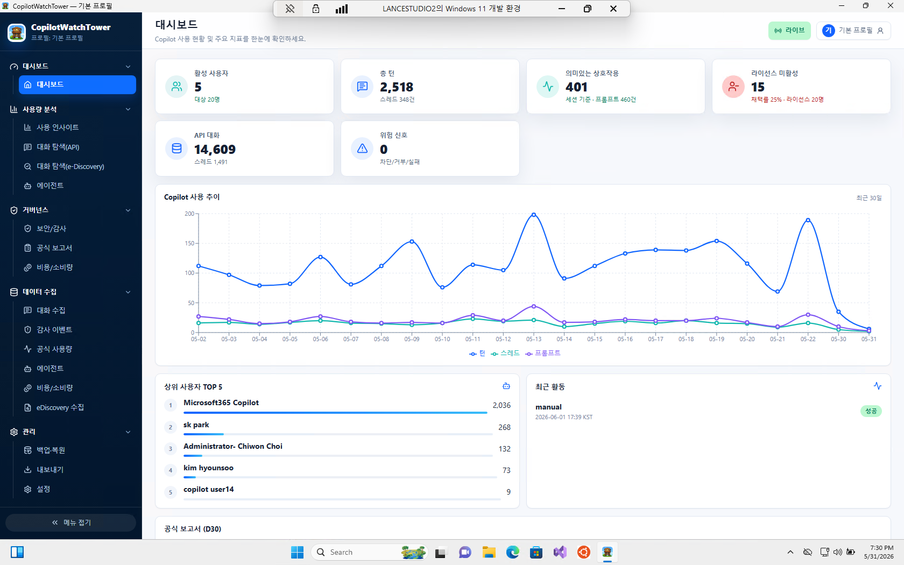
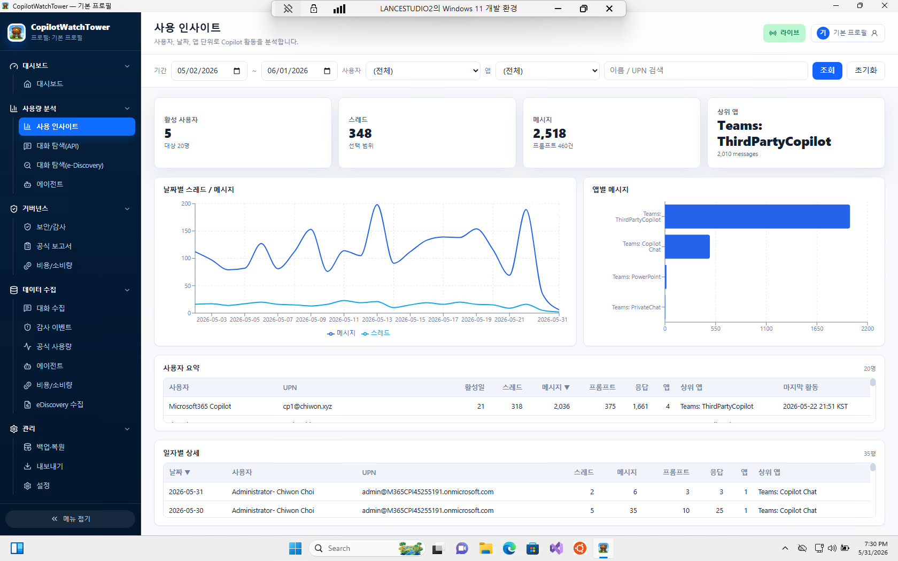
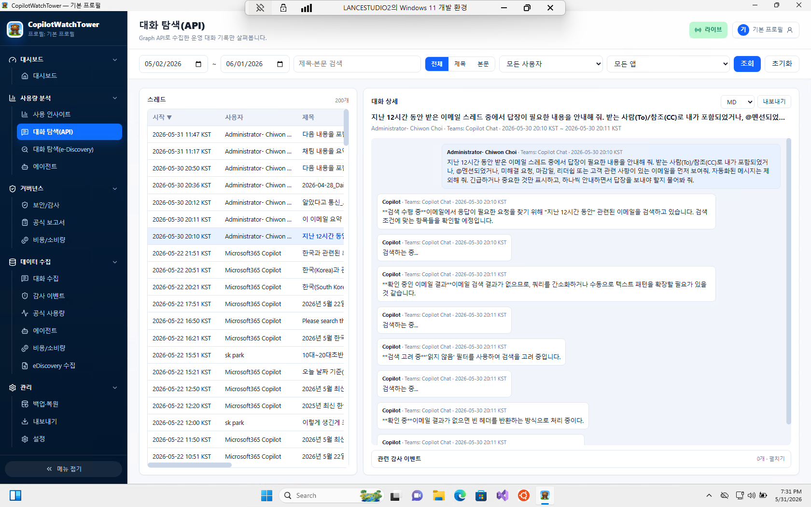

테넌트 관리자를 위한 Copilot 사용 현황·대화 수집 도구입니다. 관리자 PC 한 대에서 Microsoft Graph로 데이터를 수집해 내 PC 안의 로컬 데이터베이스에 저장하고, 컴플라이언스·분석 용도로 활용합니다.

누가 얼마나 쓰는지, 어떤 앱(Teams·Word 등)에서 쓰는지, 라이선스는 낭비되고 있지 않은지 — 이런 질문에 숫자와 근거로 답하기 위한 관리 도구입니다. 별도 서버나 외부 네트워크 포트가 필요 없습니다.
관리자 PC에서 바로 돌아가는 가볍고 안전한 데스크톱 앱입니다.
첫 실행 시 마법사가 디바이스 코드 로그인으로 Entra ID 앱을 자동 등록하고, 필요한 Graph 권한 부여와 관리자 동의까지 안내합니다.
LICENSED(라이선스 보유자), ALL_ACTIVE(전체 활성 사용자), GROUP(특정 그룹), CUSTOM(지정 UPN) 모드를 지원합니다.
사용자별 워터마크, Retry-After 준수, 지수 백오프, 멱등성 업서트로 중단 후 재실행해도 데이터가 중복되지 않습니다.
모든 데이터는 내 PC의 SQLite(%LOCALAPPDATA%)에 저장됩니다. 대화 본문에 대한 FTS5 전문 검색을 지원합니다.
대시보드(KPI + 차트), 대화 탐색, 실시간 수집 로그 모니터링, CSV/JSON/XLSX 내보내기를 제공합니다.
Qt Linguist 기반 다국어 지원으로 한국어와 영어 UI를 모두 제공합니다.
대시보드, 사용 인사이트, 대화 탐색 — 세 가지 핵심 화면.
활성 사용자 수, 총 스레드·메시지·프롬프트, 의미 있는 상호작용, 라이선스 미활용 인원 등 핵심 지표(KPI)와 최근 30일 사용 추이 그래프, 상위 사용자 TOP 5를 보여 줍니다.
기간·사용자·앱별로 Copilot 활동을 필터링해 분석합니다. 날짜별 스레드·메시지 추이, 앱별 메시지 분포, 사용자별 요약 표를 제공합니다.

Graph API로 수집한 운영 대화 기록을 제목·본문으로 검색하고, 사용자·앱별로 필터링해 개별 대화의 전체 내용을 확인합니다. 관련 감사 이벤트와 함께 Markdown 등으로 내보낼 수 있습니다.

Releases 페이지에서 CopilotWatchTower-x.y.z-setup.zip을
내려받아 압축을 풀고, 관리자 권한으로 설치 배치 파일을 실행하세요.
Python 3.11+ 가상환경에서 editable 설치 후 바로 실행할 수 있습니다.